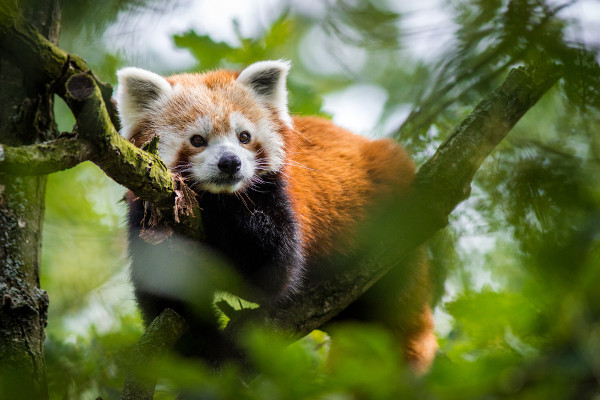

Início || Página 2 || Página 3
Principais Características:O panda-vermelho é um animal de cabeça redonda, focinho curto e orelhas eretas e pontiagudas. Possui uma cauda longa que apresenta um padrão de cores em anéis, os quais alternam-se entre vermelho e amarelo. A parte superior de seu corpo possui coloração marrom-avermelhada, enquanto sua barriga é preta. As pernas do animal também são pretas, e a sola de seus pés apresenta pelos brancos. O rosto do panda-vermelho possui pelos predominantemente brancos, e há marcas marrom-avermelhadas sob os olhos. Além de garantir proteção contra o frio, sua pelagem ajuda na camuflagem. Os pandas-vermelhos têm cerca de 56 a 62 cm de comprimento, e sua cauda possui entre 37 e 47 centímetros, sendo uma cauda relativamente longa. Esses animais pesam entre 3,7 e 6,2 kg. Outra característica importante é que eles possuem um falso polegar, o qual usam para se alimentar e se agarrar em árvores. Esse falso polegar é formado por uma extensão do osso sesamoide. |
|  |
Onde o panda-vermelho vive? |
Como é a dieta alimentar do panda-vermelho?Embora não consuman tanto bambu quanto os pandas gigantes, os pandas vermelhos ainda incluem brotos e folhas de bambu em sua dieta. No entanto, eles têm uma dieta mais diversificada do que seus primos maiores. Os pandas vermelhos também consomem uma variedade de frutas, como maçãs, bananas, uvas e bagas. Estas fornecem nutrientes adicionais e variedade à sua dieta. Além do bambu, os pandas vermelhos podem comer uma variedade de vegetais e verduras, como cenouras, abobrinhas e folhas verdes. Embora a maior parte de sua dieta seja composta por material vegetal, os pandas vermelhos também ocasionalmente se alimentam de insetos, ovos e pequenos mamíferos para obter proteína adicional. |
Conservação do Panda-Vermelho: |
Hábitos de Acasalamento:Os pandas-vermelhos são animais solitários que, geralmente, são avistados com outros pandas apenas na estação reprodutiva. Esses animais se reproduzem apenas uma vez por ano, e a maturidade sexual é atingida quando esses animais atingem entre 18 e 20 meses. Durante a temporada reprodutiva, os machos e fêmeas se acasalam com diferentes parceiros. A gestação do panda-vermelho é de cerca de quatro a cinco meses, e a ninhada é composta por um ou até quatro filhotes. A fêmea, antes de dar à luz seu filhote, prepara um ninho onde sua cria ficará por cerca de 90 dias. Inicialmente, a fêmea passa quase 90% do tempo com seu filhote, porém, depois de uma semana, passa a ficar mais tempo longe do ninho, retornando para amamentar e limpar o local. Machos não possuem papel no cuidado dos filhotes, e os filhotes permanecem com a mãe até a próxima estação reprodutiva. |